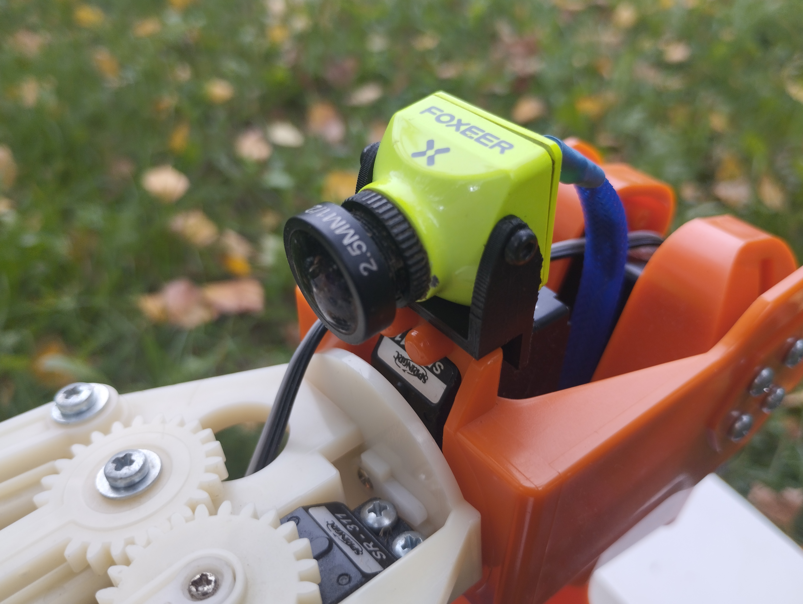

Key Features
Robotic Arm with Inverse Kinematics
The 5-DOF arm is driven by inverse kinematics, enabling precise control and complex manipulations for a wide range of tasks.

Navigation on Difficult Terrain
With a robust chassis, the robot can handle rugged terrains, making it suitable for critical field applications.

First-Person Vision Camera
The onboard camera provides real-time visual feedback, essential for precision and remote monitoring.
